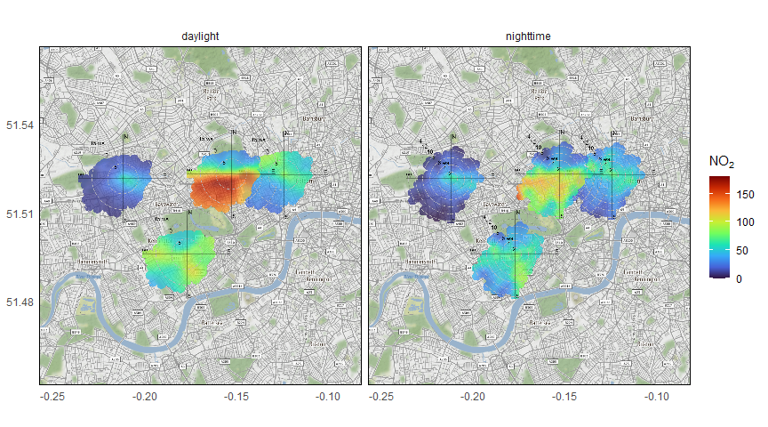

The main goal of openairmaps is to combine the robust analytical methods found in openair with the highly capable leaflet package. openairmaps is thoroughly documented in the openair book.
Installation
You can install the release version of openairmaps from CRAN with:
install.packages("openairmaps")You can install the development version of openairmaps from GitHub with:
# install.packages("devtools")
devtools::install_github("davidcarslaw/openairmaps")Overview
The openairmaps package is thoroughly documented in the openair book, which goes into great detail about its various functions. Functionality includes visualising UK AQ networks (networkMap()), putting “polar directional markers” on maps (e.g., polarMap()) and overlaying HYSPLIT trajectories on maps (e.g., trajMap()), all using the leaflet package.
polar_data %>%
openair::cutData("daylight") %>%
buildPopup(
c("site", "site_type"),
names = c("Site" = "site", "Site Type" = "site_type"),
control = "daylight"
) %>%
polarMap(
pollutant = "no2",
limits = c(0, 180),
control = "daylight",
popup = "popup"
)An example polarMap() showing NO2 concentrations in central London.
While an interactive map is preferred for exploratory directional analysis, it is limited to the HTML format. Some applications (for example, academic journals) demand “static” formats like .docx and .pdf. For this reason, “static” versions of openairmaps polar marker functions have been provided which are written in ggplot2. A benefit of being written in ggplot2 is that additional layers can be added (e.g., geom_label() could be used to label sites) and limited further customisation is available using theme() and guides().
polar_data %>%
openair::cutData("daylight") %>%
polarMapStatic(
pollutant = "no2",
limits = c(0, 180),
facet = "daylight",
facet.nrow = 2,
alpha = .9
)